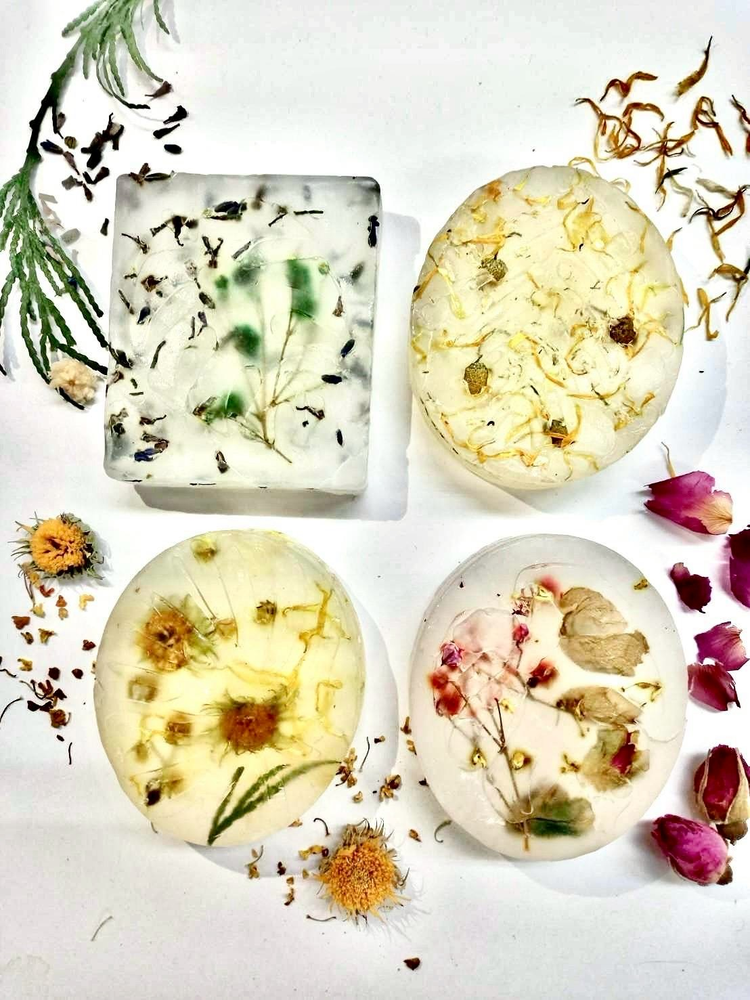
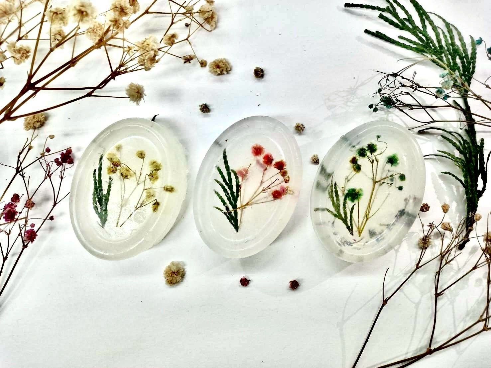

花材搭配
BOTANICAL COMPOSITION
滿天星、金盞花、玫瑰與植物葉片，透過色彩與位置搭配，留下各自的自然姿態。
A LITTLE FLOWER, A LITTLE MEMORY
一朵花、一縷香氣、一份手作心意。
將喜歡的植物風景，收藏在透明手工皂裡。

一份小小的紀念，也是日常裡剛剛好的溫柔。

01 / OUR STORY
Souvenir，是「紀念品」，也是我們想留下的美好。比起匆匆經過，更希望一朵花的姿態，能在日常裡被好好看見。
我是 Souvenir 的創辦人。我希望手工皂不只是清潔用品，也能成為有美感、有溫度，適合送給自己或重要之人的小物。
以透明皂體承載乾燥花，搭配不同精油與植物元素，讓清潔的日常，多一份值得欣賞的風景。
認識我們的手作細節02 / THE COLLECTION
收藏一朵花，
也收藏一個喜歡的日常。
花信系列 50g NT$80｜花日系列 100g NT$100。選款與供應情況歡迎私訊 Instagram。
03 / MADE WITH THOUGHT
從花材的搭配，到送出的心意。
把喜歡的細節，好好放進日常。
BOTANICAL COMPOSITION
滿天星、金盞花、玫瑰與植物葉片，透過色彩與位置搭配，留下各自的自然姿態。
MADE BY HAND
將植物元素安排於透明皂體中。從選材到配置，每一枚的花草分布都有自己的樣貌。
A SMALL, THOUGHTFUL GIFT
讓手工皂成為一份小小紀念。自用選款或送禮搭配，都歡迎與我們分享你的想法。
每款精油與裝飾花材皆列於商品卡片；花材配置請以實品為準。